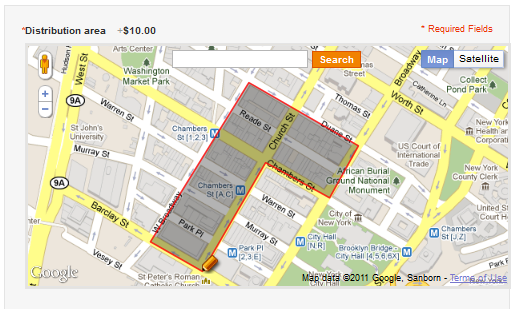

<?xml version="1.0" encoding="UTF-8"?><rss version="2.0"
	xmlns:content="http://purl.org/rss/1.0/modules/content/"
	xmlns:wfw="http://wellformedweb.org/CommentAPI/"
	xmlns:dc="http://purl.org/dc/elements/1.1/"
	xmlns:atom="http://www.w3.org/2005/Atom"
	xmlns:sy="http://purl.org/rss/1.0/modules/syndication/"
	xmlns:slash="http://purl.org/rss/1.0/modules/slash/"
	>

<channel>
	<title>ZetaPrints features &#8211; On web to print sofware, solutions and hosted services</title>
	<atom:link href="http://www.zetaprints.com/blog/category/zetaprints-features/feed/" rel="self" type="application/rss+xml" />
	<link>http://www.zetaprints.com/blog</link>
	<description>From web to print and everything in between</description>
	<lastBuildDate>Fri, 02 Aug 2013 10:44:32 +0000</lastBuildDate>
	<language>en-US</language>
	<sy:updatePeriod>hourly</sy:updatePeriod>
	<sy:updateFrequency>1</sy:updateFrequency>
	<generator>https://wordpress.org/?v=4.4.1</generator>
	<item>
		<title>Web to print for direct mail</title>
		<link>http://www.zetaprints.com/blog/2011/04/10/web-to-print-for-direct-mail/</link>
		<comments>http://www.zetaprints.com/blog/2011/04/10/web-to-print-for-direct-mail/#comments</comments>
		<pubDate>Sun, 10 Apr 2011 06:56:18 +0000</pubDate>
		<dc:creator><![CDATA[admin]]></dc:creator>
				<category><![CDATA[Marketing]]></category>
		<category><![CDATA[ZetaPrints features]]></category>

		<guid isPermaLink="false">http://www.zetaprints.com/blog/?p=667</guid>
		<description><![CDATA[We released a new experimental extension for Magento to help printers and marketers get into direct mail market. The extension is very simple yet it does the job.  Add it to a web-to-print site and you get a one stop shop for direct mail. How it works The map shows in product details as a [&#8230;]]]></description>
				<content:encoded><![CDATA[<p>We released a <a title="web to print and direct mail" href="../../../../magento-web-to-print/unaddressed-mail/">new experimental extension</a> for Magento to <strong>help printers and marketers get into direct mail market</strong>. The extension is very simple yet it does the job.  Add it to a web-to-print site and you get a one stop shop for direct mail.<span id="more-667"></span></p>
<p></p>
<h2>How it works</h2>
<p>The map shows in product details as a custom option. The user clicks on it several times to select the area of distribution and the coordinates of the polygon are saved with the order. They can be downloaded as a KML file. A low-tech solution would be to get the description of the area from the map as it shows in order details. The map can be zoomed in and out to get the boundaries more accurately. View a <strong><a title="web to print and direct mail" href="../../../../magento/index.php/featured/political-campaign-card.html">demo direct mail product</a></strong>.</p>
<h2>Direct mail for small businesses</h2>
<p>Ever tried to do a small scale direct mail campaign?</p>
<p>It is hard. Unnecessary hard and overpriced. Try it <a title="USPS direct mail" href="http://smp.usps.gov/">here</a> or <a title="NZ Post direct mail" href="https://www.mailbase-nzpost.co.nz/">here</a> or <a title="Royal mail. We got stuck in the loop with them." href="https://www.royalmail.com/portal/rm/doortodoor?catId=400092&mediaId=36400701">here</a>.</p>
<p>We want to make it easy for any printing or marketing company to cover this under-served segment of the market.</p>
<p>Potential customers:</p>
<ul>
<li>local political candidate</li>
<li>small community orientated business like restaurants, hair dresses, local shops</li>
<li>clubs and other community orientated organisations</li>
</ul>
<p>These types of businesses think on a very small scale with a very limited budget. The task is likely to be performed by someone not committed to it enough to jump through too many loops and hoops. It&#8217;s got to be quick, simple and cost effective to be of any use to them.</p>
<p>Our <a title="web to print and direct mail" href="../../../../magento-web-to-print/unaddressed-mail/">web-to-print and distribution map extensions</a> come together into an elegant solution. It is online, it is simple and the cost of doing the transaction is negligible.</p>
<p>A very important part of it is the intuitive use of the map. The customer is not constrained by selecting a postcode area or some predefined shape like a rectangular or circle. The selection is an arbitrary polygon that runs along the streets the customer is interested in.</p>
<p>Consider a restaurant. They know the local dynamics and can target the area of just a few blocks away from them. They also have a limited budget. So the thinking is likely to be like this: &#8220;<em>I have $x and it buys me N leaflets distributed along these streets. Let&#8217;s do it.</em>&#8221; and this is exactly what web-to-print and distribution map extensions offer.</p>
<h2>What&#8217;s in it for printers and marketers</h2>
<p>The way the market is structured at the moment works for a small pool of large advertisers. Postal authorities and alternative mail distributors are not interested in the small business because of the high cost of transaction and low profit margin. Try using their online tools, test your patience.</p>
<p>You can capture a slice of this dissatisfied market by offering them the service as a value-add to your core design and printing services. The key here is the low cost of transaction &#8211; you can make money even on small volumes as long as it is profitable for you to print.</p>
<h2>One big limitation</h2>
<p>It&#8217;s important to know the number of addresses in the selected area at the time of ordering to help choose the right quantity. We were unable to obtain this data in a consistent manner yet. One of the solutions is to tie up your installation with one of list service provider. In the meantime we are looking for a generic solution.</p>
<p>&nbsp;</p>
]]></content:encoded>
			<wfw:commentRss>http://www.zetaprints.com/blog/2011/04/10/web-to-print-for-direct-mail/feed/</wfw:commentRss>
		<slash:comments>1</slash:comments>
		</item>
		<item>
		<title>New registration / login</title>
		<link>http://www.zetaprints.com/blog/2009/10/03/new-registration-login/</link>
		<comments>http://www.zetaprints.com/blog/2009/10/03/new-registration-login/#comments</comments>
		<pubDate>Sat, 03 Oct 2009 12:17:30 +0000</pubDate>
		<dc:creator><![CDATA[admin]]></dc:creator>
				<category><![CDATA[Known issues]]></category>
		<category><![CDATA[web-to-print software]]></category>

		<guid isPermaLink="false">http://www.zetaprints.com/blog/?p=482</guid>
		<description><![CDATA[An update was rolled our a few hrs ago to all web-to-print sites. We changed the way web-to-print users register for public catalogs where registration is required. They now see a small registration form as part of the order form where they are asked to enter their email address or log in. The ORDER button [&#8230;]]]></description>
				<content:encoded><![CDATA[<p>An update was rolled our a few hrs ago to all web-to-print sites.</p>
<p>We changed the way web-to-print users register for public catalogs where registration is required.</p>
<p>They now see a small registration form as part of the order form where they are asked to enter their email address or log in. The ORDER button is disabled until they either register or log in.</p>
<p>There are a couple of known issues with the update and we&#8217;ll be working through them in the coming hours.</p>
<p>At the same time we launched a &#8220;garbage collector&#8221; to delete old order files. You may notice that web-to-print orders older than 3 months don&#8217;t have the files any more. You can regenerate the files, if you need to. No charges apply.</p>
<p>Users will see a message saying that files were archived, if the files were actually available to users. In most cases they are not.</p>
]]></content:encoded>
			<wfw:commentRss>http://www.zetaprints.com/blog/2009/10/03/new-registration-login/feed/</wfw:commentRss>
		<slash:comments>1</slash:comments>
		</item>
		<item>
		<title>Are you running WordPress?</title>
		<link>http://www.zetaprints.com/blog/2009/07/14/are-you-running-wordpress/</link>
		<comments>http://www.zetaprints.com/blog/2009/07/14/are-you-running-wordpress/#respond</comments>
		<pubDate>Tue, 14 Jul 2009 10:27:35 +0000</pubDate>
		<dc:creator><![CDATA[admin]]></dc:creator>
				<category><![CDATA[Printer update history]]></category>
		<category><![CDATA[web-to-print features]]></category>
		<category><![CDATA[web-to-print software]]></category>

		<guid isPermaLink="false">http://www.zetaprints.com/blog/?p=451</guid>
		<description><![CDATA[How to get more traffic We&#8217;ve just released a WordPress plugin for an image generator. The plugin can connect to your catalogs and users will be able to email your designs as e-cards. It is not possible to email directly from Flash. The server-side part of the plugin handles all the configuration and emailing. There [&#8230;]]]></description>
				<content:encoded><![CDATA[<h2>How to get more traffic</h2>
<p>We&#8217;ve just released a <a title="E-cards plugin" href="../../../../help/tools/ecards-plugin-for-wordpress/">WordPress plugin for an image generator</a>.</p>
<p>The plugin can connect to your catalogs and users will be able to email your designs as e-cards.</p>
<p>It is not possible to email directly from Flash. The server-side part of the plugin handles all the configuration and emailing.</p>
<p>There are a couple of minor glitches, still, but overall it is usable.</p>
<p>This service is free. You are not paying anything. There is a link on every design page in Flash to jump to the ordering page.</p>
<p>Make a few simple templates your audience may want to use and let them have a bit of fun before they are ready to order.  Ideally, you need to approach other blogs and ask them to embed this to get more traffic to your site.</p>
<h2>Magento</h2>
<p>We&#8217;ve been flat out working on Magento web-to-print integration. It is now in a stable beta stage. You can grab it directly from <a title="web-to-print store" href="https://www.magentocommerce.com/magento-connect/web-to-print-and-dynamic-imaging.html">Magento website</a>. Contact <a title="Contact ZetaPrints" href="mailto:support@zetaprints.com" target="_self">support@zetaprints.com</a> if you run into any glitches. We are giving full installation assistance at this stage. This is an<a title="open source web-to-print" href="http://code.google.com/p/magento-w2p/"> open source project</a>, so you can always get your own developers to turn it into a web-to-print store you want.</p>
<h2>Upcoming features</h2>
<p>Three main streams of work:</p>
<ul>
<li>Improve Text.1, Text.2 <a title="Web-to-print text fields" href="../../../../help/text-fields-naming-overview/">web-to-print ext field linking</a> and Text~ fields with per-char formatting</li>
<li>Add custom blocks of text to let you write your own emails and insert some user or order details.</li>
<li>Improve search, including searching by size and download file type.</li>
</ul>
<p>A re-designed <a title="PayPal for web-to-print" href="http://code.google.com/p/paypal-pro-wordpress-gateway/">PayPal Pro plugin for WordPress</a> is coming out soon too. It should reduce number of declined transactions as PayPal may get fussy with it&#8217;s hosted payments page.</p>
]]></content:encoded>
			<wfw:commentRss>http://www.zetaprints.com/blog/2009/07/14/are-you-running-wordpress/feed/</wfw:commentRss>
		<slash:comments>0</slash:comments>
		</item>
		<item>
		<title>Editing saved orders and more</title>
		<link>http://www.zetaprints.com/blog/2009/05/12/editing-saved-orders-and-more/</link>
		<comments>http://www.zetaprints.com/blog/2009/05/12/editing-saved-orders-and-more/#respond</comments>
		<pubDate>Tue, 12 May 2009 13:56:30 +0000</pubDate>
		<dc:creator><![CDATA[admin]]></dc:creator>
				<category><![CDATA[Printer update history]]></category>
		<category><![CDATA[web-to-print software]]></category>

		<guid isPermaLink="false">http://www.zetaprints.com/blog/?p=413</guid>
		<description><![CDATA[We fixed an old bug that prevented printers completing saved web-to-print orders on behalf of customers. As a bonus, there is a choice of checking out or updating the preview from a a saved web-to-print order. Users don&#8217;t need to update a preview to check out a saved order. There is a risk the preview [&#8230;]]]></description>
				<content:encoded><![CDATA[<p>We fixed an old bug that prevented printers completing saved web-to-print orders on behalf of customers.</p>
<p>As a bonus, there is a choice of checking out or updating the preview from a a saved web-to-print order. Users don&#8217;t need to update a preview to check out a saved order. There is a risk the preview and output files can be out of sync if the template files have changed since the order was saved. Keep an eye out for a day or two. We are fixing up this one as well.</p>
]]></content:encoded>
			<wfw:commentRss>http://www.zetaprints.com/blog/2009/05/12/editing-saved-orders-and-more/feed/</wfw:commentRss>
		<slash:comments>0</slash:comments>
		</item>
		<item>
		<title>JavaScript and Cookies blocking</title>
		<link>http://www.zetaprints.com/blog/2009/05/01/javascript-and-cookies-blocking/</link>
		<comments>http://www.zetaprints.com/blog/2009/05/01/javascript-and-cookies-blocking/#respond</comments>
		<pubDate>Fri, 01 May 2009 06:40:01 +0000</pubDate>
		<dc:creator><![CDATA[admin]]></dc:creator>
				<category><![CDATA[Printer update history]]></category>
		<category><![CDATA[web-to-print features]]></category>
		<category><![CDATA[web-to-print software]]></category>

		<guid isPermaLink="false">http://www.zetaprints.com/blog/?p=399</guid>
		<description><![CDATA[There is a small number of web-to-print users with very tight security settings in their browser. Some of them made it intentionally tight, some are using a computer configured by someone else. The first category enable/disable cookies and JavaScript as needed. The second have no idea. We added a special notice for them and help [&#8230;]]]></description>
				<content:encoded><![CDATA[<p>There is a small number of web-to-print users with very tight security settings in their browser. Some of them made it intentionally tight, some are using a computer configured by someone else. The first category enable/disable cookies and JavaScript as needed. The second have no idea.</p>
<p>We added a special notice for them and help pages on how to resolve it. Unfortunately, only so of them can do it themselves.</p>
<p><a href="http://ec2-67-202-43-115.compute-1.amazonaws.com/blog/wp-content/uploads/2009/05/web-to-print-cookies.png"></a></p>
<p>Please, synchronize your <a title="web-to-print help" href="../../../../help/custom-help-pages/">custom web-to-print help</a> pages to make sure the links to instructions are not broken. The easiest way to do it is to copy our content as is.</p>
<h2>How to test the messages and links</h2>
<p>Disable cookies and JavaScript for for your domain (temporarily!) and click on Home or any other link and you should see the warnings at the top &#8211; left corner.</p>
]]></content:encoded>
			<wfw:commentRss>http://www.zetaprints.com/blog/2009/05/01/javascript-and-cookies-blocking/feed/</wfw:commentRss>
		<slash:comments>0</slash:comments>
		</item>
		<item>
		<title>Embeddable e-cards plugin</title>
		<link>http://www.zetaprints.com/blog/2009/04/27/embeddable-e-cards-plugin/</link>
		<comments>http://www.zetaprints.com/blog/2009/04/27/embeddable-e-cards-plugin/#respond</comments>
		<pubDate>Mon, 27 Apr 2009 22:19:22 +0000</pubDate>
		<dc:creator><![CDATA[admin]]></dc:creator>
				<category><![CDATA[Announcements]]></category>
		<category><![CDATA[Graphic design]]></category>
		<category><![CDATA[web-to-print features]]></category>
		<category><![CDATA[web-to-print software]]></category>
		<category><![CDATA[ZetaPrints features]]></category>

		<guid isPermaLink="false">http://www.zetaprints.com/blog/?p=389</guid>
		<description><![CDATA[We are still adding final touches to our new open source e-cards plugin, but here it is nonetheless. It can be embedded into any web page just as I embedded it here. Embedding string: &#60;span class=&#8221;mceItemObject&#8221; width=&#8221;600&#8243; height=&#8221;400&#8243; data=&#8221;http://www.zetaprints.ru/ecard/e-cards-plugin.swf&#8221; type=&#8221;application/x-shockwave-flash&#8221;&#62;&#60;br /&#62; &#60;span name=&#8221;id&#8221; value=&#8221;e-cards-plugin&#8221; class=&#8221;mceItemParam&#8221;&#62;&#60;/span&#62; &#60;span name=&#8221;align&#8221; value=&#8221;middle&#8221; class=&#8221;mceItemParam&#8221;&#62;&#60;/span&#62; &#60;span name=&#8221;allowScriptAccess&#8221; value=&#8221;sameDomain&#8221; class=&#8221;mceItemParam&#8221;&#62;&#60;/span&#62; &#60;span name=&#8221;allowFullScreen&#8221; [&#8230;]]]></description>
				<content:encoded><![CDATA[<p>We are still adding final touches to our new open source e-cards plugin, but here it is nonetheless.<br />
<object width="600" height="400" data="http://www.zetaprints.ru/ecard/e-cards-plugin.swf" type="application/x-shockwave-flash"><param name="id" value="e-cards-plugin" /><param name="align" value="middle" /><param name="allowScriptAccess" value="sameDomain" /><param name="allowFullScreen" value="false" /><param name="quality" value="high" /><param name="bgcolor" value="#666666" /><param name="src" value="http://www.zetaprints.ru/ecard/e-cards-plugin.swf" /><param name="name" value="e-cards-plugin" /><param name="flashvars" value="params=http://realestate.zetaprints.com/RssTemplates.aspx?2D245F1D-BAFE-47B5-93E5-63805754A54B" /><param name="allowfullscreen" value="false" /></object></p>
<p>It can be embedded into any web page just as I embedded it here.<br />
<strong>Embedding string:</strong> <textarea rows="5" cols="50" onclick="this.select()">&lt;span class=&#8221;mceItemObject&#8221;  width=&#8221;600&#8243; height=&#8221;400&#8243; data=&#8221;http://www.zetaprints.ru/ecard/e-cards-plugin.swf&#8221; type=&#8221;application/x-shockwave-flash&#8221;&gt;&lt;br /&gt; &lt;span  name=&#8221;id&#8221; value=&#8221;e-cards-plugin&#8221; class=&#8221;mceItemParam&#8221;&gt;&lt;/span&gt; &lt;span  name=&#8221;align&#8221; value=&#8221;middle&#8221; class=&#8221;mceItemParam&#8221;&gt;&lt;/span&gt; &lt;span  name=&#8221;allowScriptAccess&#8221; value=&#8221;sameDomain&#8221; class=&#8221;mceItemParam&#8221;&gt;&lt;/span&gt; &lt;span  name=&#8221;allowFullScreen&#8221; value=&#8221;false&#8221; class=&#8221;mceItemParam&#8221;&gt;&lt;/span&gt; &lt;span  name=&#8221;quality&#8221; value=&#8221;high&#8221; class=&#8221;mceItemParam&#8221;&gt;&lt;/span&gt; &lt;span  name=&#8221;bgcolor&#8221; value=&#8221;#666666&#8243; class=&#8221;mceItemParam&#8221;&gt;&lt;/span&gt; &lt;span  name=&#8221;src&#8221; value=&#8221;http://www.zetaprints.ru/ecard/e-cards-plugin.swf&#8221; class=&#8221;mceItemParam&#8221;&gt;&lt;/span&gt; &lt;span  name=&#8221;name&#8221; value=&#8221;e-cards-plugin&#8221; class=&#8221;mceItemParam&#8221;&gt;&lt;/span&gt; &lt;span  name=&#8221;flashvars&#8221; value=&#8221;params=http://realestate.zetaprints.com/RssTemplates.aspx?2D245F1D-BAFE-47B5-93E5-63805754A54B&#8221; class=&#8221;mceItemParam&#8221;&gt;&lt;/span&gt; &lt;span  name=&#8221;allowfullscreen&#8221; value=&#8221;false&#8221; class=&#8221;mceItemParam&#8221;&gt;&lt;/span&gt;&lt;/span&gt;</textarea></p>
<h2><strong>Variable parameters</strong></h2>
<p><strong>Width:</strong> set to width in pixels or % (in 2 places)</p>
<p><strong>Height:</strong> set to height in pixels or % (in 2 places)</p>
<p><strong>Data source: </strong> this is an address of RSS feed for the catalog you want to show. The catalog needs to be public.</p>
<h2>What for?</h2>
<p>Don&#8217;t ask. It&#8217;s one of those pet projects. Maybe there is some use for it.</p>
<p>The most obvious is to promote your products. Build a catalog with a few simple templates that work well in small size and are fun. Embed the plugin on your site. Ask others to embed it. The user may want to click through to your site and actually order something after playing with these small designs.</p>
<p>Your suggestions on what features to add are welcome.</p>
]]></content:encoded>
			<wfw:commentRss>http://www.zetaprints.com/blog/2009/04/27/embeddable-e-cards-plugin/feed/</wfw:commentRss>
		<slash:comments>0</slash:comments>
		</item>
		<item>
		<title>Web-to-print interface changes tomorrow</title>
		<link>http://www.zetaprints.com/blog/2009/04/13/web-to-print-interface-changes-tomorrow/</link>
		<comments>http://www.zetaprints.com/blog/2009/04/13/web-to-print-interface-changes-tomorrow/#respond</comments>
		<pubDate>Mon, 13 Apr 2009 13:23:07 +0000</pubDate>
		<dc:creator><![CDATA[admin]]></dc:creator>
				<category><![CDATA[Printer update history]]></category>
		<category><![CDATA[web-to-print features]]></category>
		<category><![CDATA[web-to-print software]]></category>

		<guid isPermaLink="false">http://www.zetaprints.com/blog/?p=357</guid>
		<description><![CDATA[We&#8217;ve been stuck with some new features for the last 2 weeks. Things piled up and the update got much bigger than we expected. Usually, the updates are small to minimize the impact. This time it&#8217;s going to be noticeable. The roll-out will start on Tue evening, Australia EST time zone or GMT +10. Some [&#8230;]]]></description>
				<content:encoded><![CDATA[<p>We&#8217;ve been stuck with some new features for the last 2 weeks. Things piled up and the update got much bigger than we expected. Usually, the updates are small to minimize the impact. This time it&#8217;s going to be noticeable.</p>
<p>The roll-out will start on Tue evening, Australia EST time zone or GMT +10. Some downtime is possible if we need to restart the cluster.</p>
<h2>Web-to-print preview page changes</h2>
<ul>
<li>Tabbed interface to bring description, prices, options, checkout, links, etc into a single manageable group.</li>
<li>Image fields get tabs as well to allow image uploading, stock photos, composite orders (use previous orders as images).</li>
<li>A color picker (RGB and CMYK) for image fields.</li>
<li>Checkout form has moved to the top.</li>
</ul>
<h2>Image management page</h2>
<p>Additional field properties to allow a combination of user images, stock photos, color picker, etc.</p>
<h2>Order list</h2>
<p>An interactive calendar to pick dates instead of entering in the search form.</p>
]]></content:encoded>
			<wfw:commentRss>http://www.zetaprints.com/blog/2009/04/13/web-to-print-interface-changes-tomorrow/feed/</wfw:commentRss>
		<slash:comments>0</slash:comments>
		</item>
		<item>
		<title>Image library upgrade</title>
		<link>http://www.zetaprints.com/blog/2009/02/25/image-library-upgrade/</link>
		<comments>http://www.zetaprints.com/blog/2009/02/25/image-library-upgrade/#respond</comments>
		<pubDate>Wed, 25 Feb 2009 22:50:57 +0000</pubDate>
		<dc:creator><![CDATA[admin]]></dc:creator>
				<category><![CDATA[Printer update history]]></category>
		<category><![CDATA[web-to-print software]]></category>

		<guid isPermaLink="false">http://www.zetaprints.com/blog/?p=334</guid>
		<description><![CDATA[Image mangement has just become wee bit easier &#8211; we upgraded the image library and template images sections. Images can be organised into folders, copied and edited right on the site. Check it out. Detailed explanations posted on web-to-print help site.]]></description>
				<content:encoded><![CDATA[<p>Image mangement has just become wee bit easier &#8211; we upgraded the image library and template images sections.</p>
<p>Images can be organised into folders, copied and edited right on the site. Check it out.</p>
<p>Detailed explanations posted on <a title="web to print help" href="../../../../help/image-library/">web-to-print help</a> site.</p>
]]></content:encoded>
			<wfw:commentRss>http://www.zetaprints.com/blog/2009/02/25/image-library-upgrade/feed/</wfw:commentRss>
		<slash:comments>0</slash:comments>
		</item>
		<item>
		<title>X4 &#038; missing fonts</title>
		<link>http://www.zetaprints.com/blog/2009/02/14/x4-missing-fonts/</link>
		<comments>http://www.zetaprints.com/blog/2009/02/14/x4-missing-fonts/#respond</comments>
		<pubDate>Sat, 14 Feb 2009 06:11:04 +0000</pubDate>
		<dc:creator><![CDATA[admin]]></dc:creator>
				<category><![CDATA[Printer update history]]></category>

		<guid isPermaLink="false">http://www.zetaprints.com/blog/?p=326</guid>
		<description><![CDATA[You can try to upload X4 files, but gently-gently. We are still testing and may roll-back any time. Looks like we are having problems with some fonts. They disappear at random. It&#8217;s being looked into right now. Tell us if you spot any other problems.]]></description>
				<content:encoded><![CDATA[<p>You can try to upload X4 files, but gently-gently. We are still testing and may roll-back any time.</p>
<p>Looks like we are having problems with some fonts. They disappear at random. It&#8217;s being looked into right now.</p>
<p>Tell us if you spot any other problems.</p>
]]></content:encoded>
			<wfw:commentRss>http://www.zetaprints.com/blog/2009/02/14/x4-missing-fonts/feed/</wfw:commentRss>
		<slash:comments>0</slash:comments>
		</item>
		<item>
		<title>Time zones</title>
		<link>http://www.zetaprints.com/blog/2009/01/10/time-zones/</link>
		<comments>http://www.zetaprints.com/blog/2009/01/10/time-zones/#respond</comments>
		<pubDate>Sun, 11 Jan 2009 03:13:00 +0000</pubDate>
		<dc:creator><![CDATA[admin]]></dc:creator>
				<category><![CDATA[Printer update history]]></category>
		<category><![CDATA[web-to-print software]]></category>
		<category><![CDATA[time zone]]></category>

		<guid isPermaLink="false">http://www.zetaprints.com/blog/?p=293</guid>
		<description><![CDATA[Please, go to your details page and choose a time zone for your web-to-print portal. All orders used to be in UTC +12. Now they are in UTC time, unless you set your time zone. Navigate to DETAILS page. The drop down list of zones is in the second group of controls. Check if you [&#8230;]]]></description>
				<content:encoded><![CDATA[<p>Please, go to your details page and choose a time zone for your web-to-print portal.</p>
<p>All orders used to be in UTC +12. Now they are in UTC time, unless you set your time zone.</p>
<p>Navigate to DETAILS page. The drop down list of zones is in the second group of controls. Check if you need daytime saving. Press SAVE button. Check if the time was set corectly when it displays your details summary. Go back and adjust, if needed.</p>
<p>We set time zones for some web to print portals where we knew the time zone for sure. Please, double-check anyway.</p>
]]></content:encoded>
			<wfw:commentRss>http://www.zetaprints.com/blog/2009/01/10/time-zones/feed/</wfw:commentRss>
		<slash:comments>0</slash:comments>
		</item>
	</channel>
</rss>

<!-- Localized -->